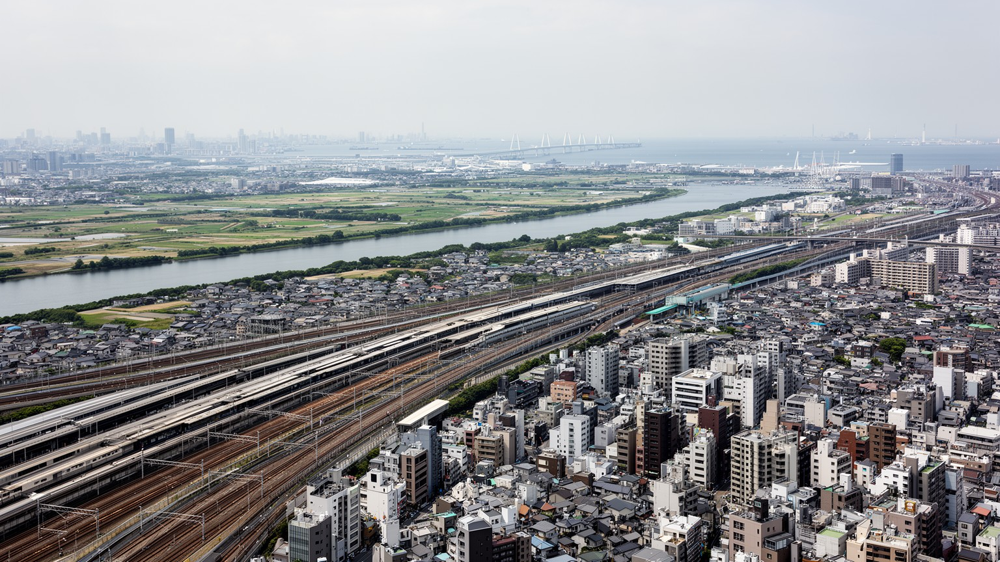
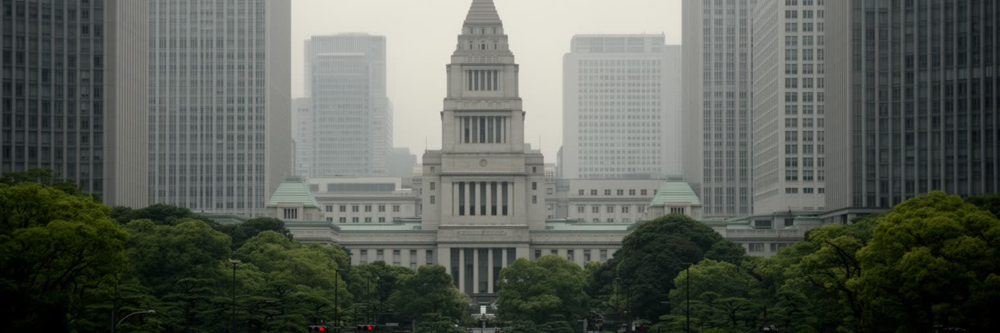
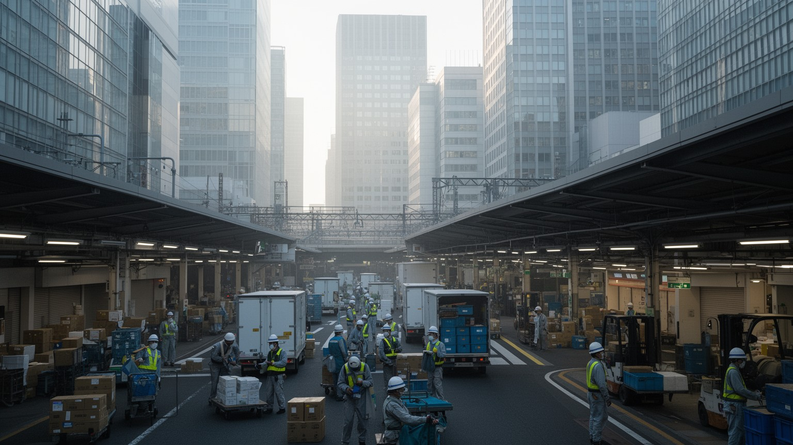
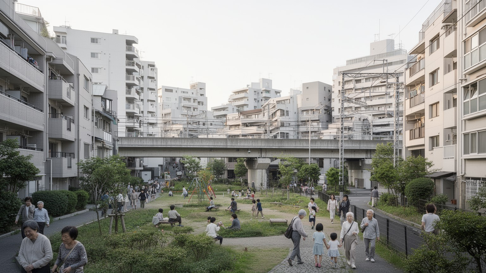
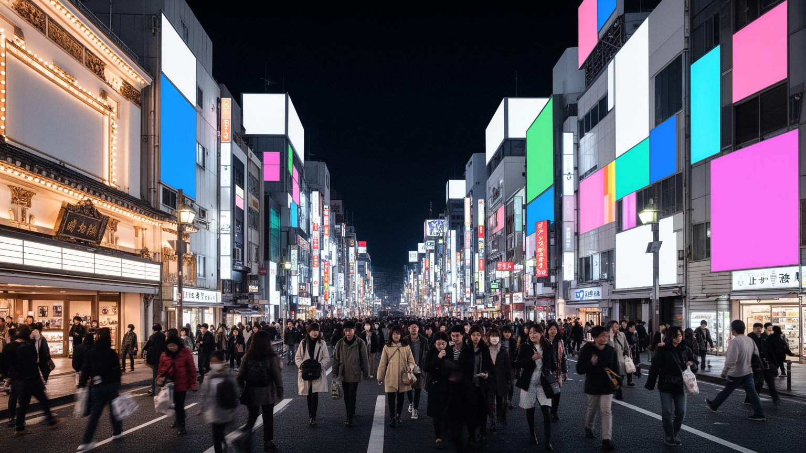
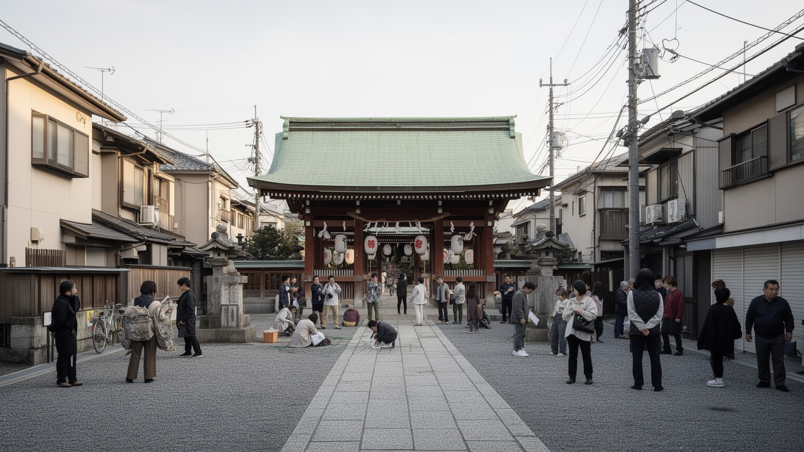
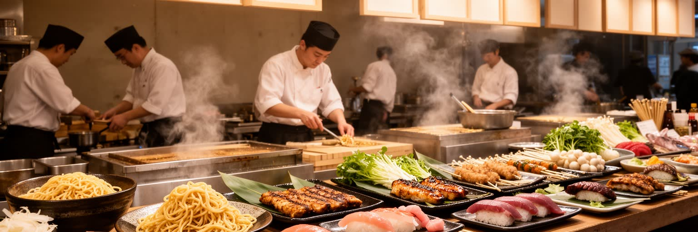
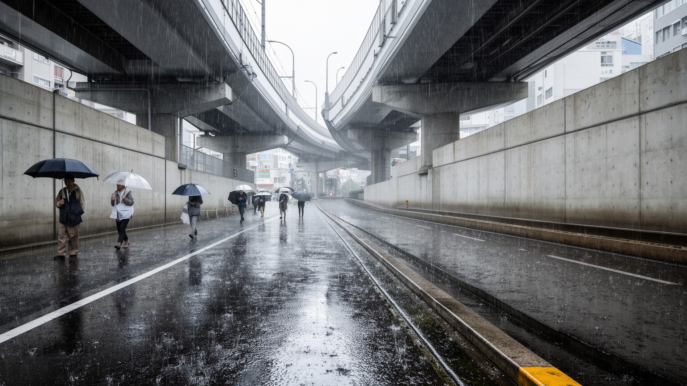
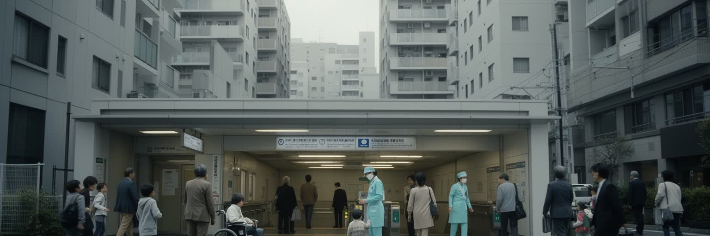
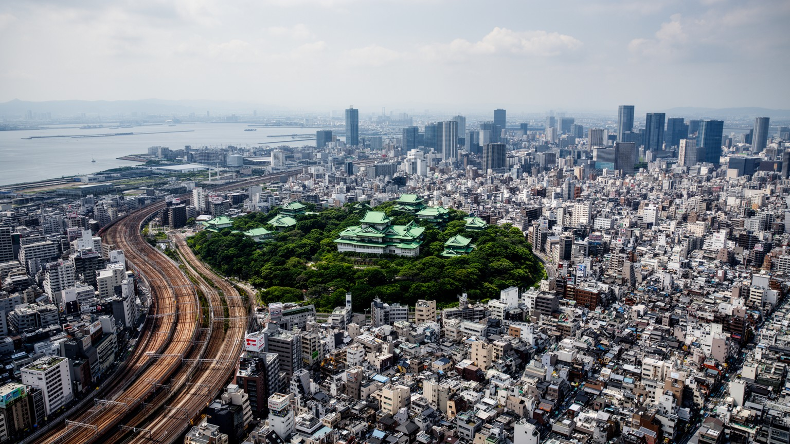

地政学
東京は皇居、国会、官庁、最高裁、大使館、報道機関が近距離に集まる首都です。警備、式典、抗議、外交、災害対応が街路に現れ、国内統治と国際接続が同じ通勤圏で動きます。首都機能の集中も大きな論点になります。

🇯🇵 日本 / アジア / World City Atlas
鉄道と湾岸が束ねる国家首都です。皇居、霞が関、丸の内、渋谷、湾岸、郊外住宅地が連続し、政治、金融、出版、情報通信、祭礼、災害対策が同じ都市圏で動いています。
都市の骨格
東京は一つの中心だけで動く都市ではありません。山手線の内側に国家と金融の中枢があり、その外側に私鉄沿線の住宅地、湾岸の物流、郊外の大学と研究施設が広がります。
東京は皇居、国会、官庁、最高裁、大使館、報道機関が近距離に集まる首都です。警備、式典、抗議、外交、災害対応が街路に現れ、国内統治と国際接続が同じ通勤圏で動きます。首都機能の集中も大きな論点になります。
丸の内の金融、渋谷の情報産業、出版、湾岸物流、医療、大学研究が重なります。配送、清掃、介護、調理、警備、港湾作業も都市を支え、専門職と現場労働の近さが東京経済を作ります。住む場所も重要な条件です。
神社や寺院は観光資源である前に、初詣、祭礼、葬送、受験祈願を支える生活の暦です。町内の祭り、移民の教会やモスク、音楽の夜、食のルールも、東京の文化と宗教を形作ります。地域の記憶も静かに残る都市です。
浅草、銀座、新宿、渋谷、湾岸、上野を短時間で巡れる一方、住民には家賃、通勤、保育、介護、猛暑、防災が日々の条件になります。市場、買い物、子どもや高齢者の移動を守れるかが、観光の成功と生活の質も左右します。

東京の地形は、武蔵野台地、東部低地、河川、運河、埋立地、湾岸で成り立ちます。台地と低地の差は、浸水リスク、坂道、地下鉄の深さ、住宅地の性格、道路の曲がり方に残っています。皇居周辺から西へ伸びる台地は官庁街、大学、私鉄沿線の住宅地へ続き、東側の低地は河川、問屋街、工場、倉庫、古い商店街、再開発地を抱えます。東京湾は観光の背景ではなく、食品、燃料、建材、コンテナ、清掃工場、空港アクセスを受け止める物流装置です。交通の骨格は山手線だけでなく、地下鉄、私鉄、JR、バス、徒歩が駅から先の生活を補います。学生の通学、子どもの送迎、高齢者の買い物、夜の帰宅は同じ乗換駅に集まり、中央線、小田急、京王、東急、西武、東武、京成、京急などの沿線文化が住宅価格、学校、娯楽、休日の行き先を形作ります。東京を見るには、丸の内や渋谷だけでなく、港、倉庫、河口の橋、車庫、地下の排水施設まで読む必要があります。駅前で聞こえる発車ベル、雨の日の地下通路、橋を渡る風、湾岸のトラックの音まで、移動の感覚が都市の骨格を知らせます。駅と地形を重ねると、西と東、内陸と湾岸で生活条件が異なり、災害時の避難、通勤、家賃までも立体的に見えてきます。この重なりは、観光客の移動にも住民の避難にも影響し、東京の便利さと脆さを同時に示します。

東京を読む入口は、中心が単なる繁華街ではなく国家制度の配置でできていることです。皇居を囲む丸の内、大手町、霞が関、永田町、日比谷、赤坂には、皇室、国会、官庁、最高裁、政党本部、大使館、報道機関、企業本社が近距離に集まり、意思決定と資本の場所が同じ通勤圏にあります。政治は抽象的な制度だけでなく、地下鉄の駅、警備の柵、官庁街の昼食、記者クラブ、デモの列、式典の交通規制として街に現れます。丸の内の金融街の隣に予算、法律、外交、安全保障を扱う霞が関があり、皇居の緑は都心の空白として歴史的な権威を示します。地方から集まる官僚、政治家、企業人、研究者、労働組合、メディア、外国大使館の動きは、鉄道網と飲食街に流れ込みます。昼の官庁街の緊張、夜の赤坂や新橋の会食、国会前の抗議、式典の日の交通規制は、制度が街路を通じて動く瞬間です。首相官邸周辺、日比谷公園、外苑、靖国通りは、政治的記憶と現在の対立が重なる舞台です。東京は日本を運営する作業場であり、その作業場が世界経済と外交の回路にも接続される都市です。国際会議や災害対応の判断もここで重なります。一方で、行政、金融、報道、交通が一地域に集まるほど災害時の弱点も大きくなり、代替機能や分散の議論が重要になります。首都を読む視点は、制度と街路が交わる場所を見ることです。

東京の経済は金融と本社機能だけでは説明できません。丸の内、大手町、日本橋には金融、商社、法律、コンサルティング、新聞社が集まり、渋谷、六本木、品川、豊洲には情報通信、広告、ゲーム、映像、スタートアップ、研究開発が重なります。神保町、御茶ノ水、秋葉原、池袋、吉祥寺、下北沢には、出版、音楽、劇場、同人文化、大学、古書、専門店が細かい経済を作ってきました。湾岸には港湾、倉庫、展示場、データセンター、清掃工場、物流施設があり、都心の消費と事務を背後から支えます。便利なサービスの表面には、配送、清掃、警備、介護、調理、保守、建設、駅員、バス運転、港湾作業、深夜の仕込みがあります。高収入の専門職と低賃金の現場労働は同じ鉄道で移動しますが、住める場所、働く時間、休める曜日は違います。配達の早さ、店の長時間営業、駅の清潔さ、イベントの安全は、誰かの夜勤や分単位の管理で成り立っています。コンビニの物流、病院の夜勤、アニメの締切、保育園の送迎、飲食店の仕込みが同時に進むところに、東京の密度があります。朝のラジオ、SNSの遅延情報、駅前ビジョンの光、商店街の呼び込みも労働のリズムを変えます。さらに研究施設、工場、物流拠点、住宅地、港、空港は周辺県と結びつき、都心の意思決定を広域の労働が支えます。企業利益だけでなく、働く人が住み続けられる家賃、移動時間、保育、医療、休暇、技能の継承まで見る必要があります。

東京の暮らしには、選択肢の多さと生活空間の狭さが同時にあります。都心には仕事、飲食、医療、文化、大学、行政、娯楽が集中し、郊外には戸建て、団地、マンション、商店街、ロードサイド施設、緑地が広がります。便利さは鉄道と駅前の密度に支えられますが、長時間通勤、家賃、保育、介護、孤独、過密、猛暑という負担を伴います。ワンルームの単身者、保育園を探す家族、古い団地の高齢者、留学生、外食産業で働く外国人、夜勤の医療従事者は、同じ東京でも違う時間割で生活します。駅近の住宅は高く、広い住宅は遠く、通勤時間は家族の食事や睡眠を削ります。住宅の論点は、住戸の広さだけでなく、どの駅に近いか、災害時に安全か、保育園や病院へ届くか、親の介護に通えるかという接続条件です。再開発は防災性や利便性を高める一方、家賃上昇で小さな店や長く住んだ人を押し出すことがあります。放課後の塾や図書館へ向かう子ども、大学へ通う学生、買い物袋を持つ高齢者、夜勤明けの人が同じ駅前を使うため、生活の余白は時間帯で変わります。朝市、総菜店、ドラッグストア、百貨店、路上の小さな屋台は、買い物の選択肢であると同時に見守りの場にもなります。子どもが遊べる公園、高齢者が買い物できる道、夜に安心して歩ける街路、多言語で使える窓口があるかで生活の質は変わります。東京の豊かさは、施設の数より、それらへ実際に届く人の範囲で評価されるべきです。

東京の文化は一つの中心からではなく、鉄道で結ばれた複数の場から生まれます。浅草は寺社、演芸、観光、問屋の記憶を持ち、上野は博物館、大学、美術館、動物園、アメ横を抱え、銀座は百貨店、画廊、劇場、高級消費の歴史を残します。新宿は歓楽街、都庁、劇場、外国人コミュニティ、地下通路が重なり、渋谷は若者文化、IT企業、再開発、ライブハウス、ファッションを吸収してきました。秋葉原は電気街からアニメ、ゲーム、同人文化、観光の場所へ変わり、神保町は出版と古書の密度を残します。テレビ、ラジオ、広告、出版、音楽、漫画、ゲーム、ファッション、食、建築、デザインは、巨大企業だけでなく、小さな編集部、映像会社、ライブハウス、専門店、学校、同人イベント、路地の飲食店によって厚みを持ちます。東京ドームの野球、両国の相撲、国立競技場の試合、東京マラソンの沿道も、メディアと街の記憶を結ぶ文化の場です。一方で家賃上昇や再開発は、小劇場、古書店、映画館、銭湯、稽古場を失わせます。深夜のライブハウスの低音、編集室の締切、学生が集まる古書店、祭礼の日の太鼓、SNSで拡散される路地の風景は、巨大な広告とは別の東京を伝えます。作品やイベントは、編集者、音響、照明、警備、清掃、印刷、配送、同人作家、学生アルバイトに支えられます。文化都市としての成熟は、発信力だけでなく、作り手と住民の場所を守れるかで決まります。

東京の信仰は、巨大寺社だけでなく、町内の祠、墓地、祭礼、商売の祈願、学校行事、家族の法事に宿ります。明治神宮、浅草寺、神田明神、増上寺は観光地として目立ちますが、初詣、七五三、受験祈願、酉の市、盆踊り、神輿、葬儀、墓参りは、忙しい都市で人が時間を区切り、家族や地域との関係を確認する方法です。再開発された地区でも、神輿、盆踊り、防災訓練、商店会の催しが地域の顔を作り、浴衣の布音、焼きそばの匂い、太鼓の響きが路地に季節を戻します。同時に、外国人住民の増加によって、教会、モスク、寺院、礼拝所、食のルールを支える店も増えています。多文化性は派手な国際都市イメージだけでなく、学校、職場、病院、行政窓口、宗教施設、食料品店で少しずつ調整される日常の手続きです。言語、在留資格、医療、教育、宗教上の食習慣は生活の壁にもなります。礼拝後の食事、墓地の管理、多言語の掲示、学校との連絡まで含めて見ると、宗教は観光名所ではなく生活の手続きとして働いています。宗教施設は災害時の避難や相談、言語支援の拠点にもなり得ます。移民の子どもが学校で必要とする支援、高齢の住民が祭礼で得るつながり、商店街が行事で作る顔の見える関係は、統計に出にくい安全網です。東京が国際都市を名乗るなら、観光客だけでなく、住民として暮らす人の宗教と文化を支える制度が必要です。

東京観光の強さは、鉄道で短時間に違う種類の都市体験へ移れる点にあります。浅草では寺社、仲見世、川、下町の記憶が重なり、銀座では百貨店、劇場、ギャラリー、老舗、高級消費が見えます。新宿は高層ビル、歓楽街、外国人観光、都庁、映画館、飲食街を抱え、渋谷は交差点、ファッション、音楽、IT、再開発の速度を見せます。上野では博物館とアメ横の市場が近く、秋葉原では電子部品、ゲーム、アニメ、観光が重なり、湾岸では橋、展示場、倉庫、海辺の再開発が別の表情を作ります。食は観光を日常へつなぐ入口です。寿司、そば、天ぷら、ラーメン、カレー、居酒屋、喫茶店、弁当、コンビニ、デパ地下は、観光客の楽しみであると同時に、働く人の昼食と夜の休息でもあります。豊洲や築地周辺の仕込み、卸売、市場、物流、深夜営業、駅前の回転率が食文化を支えます。観光が増えるほど、店は多言語化し、決済や行列管理が変わり、家賃も上がります。朝の市場、昼の定食屋、夜の立ち食い店、住宅地のベーカリー、駅ナカの弁当売り場を歩くと、だしの湯気、焼き鳥の煙、改札の電子音、雨上がりの舗道の匂いまで含めて、東京の食が都市労働の燃料であることが分かります。観光の華やかさの背後には、清掃、翻訳、配送、警備、接客、外国人労働者の仕事があります。観光の成功は、訪れる人の満足だけでなく、住む人が街を使い続けられるかで判断されます。

東京は巨大で便利な都市であるほど、災害と気候の影響を強く受けます。首都直下地震、台風、豪雨、高潮、河川氾濫、猛暑、停電、感染症は、行政計画だけでなく日常の習慣に関わります。耐震化された建物、地下鉄の排水設備、防潮堤、避難所、帰宅困難者対策、防災訓練、備蓄、ハザードマップ、学校や町内会の連絡網は、都市の見えにくい基盤です。湾岸や東部低地では浸水リスクがあり、高層マンションでは停電時のエレベーター、水、トイレ、情報通信が問題になります。西側の住宅地でも、木造密集地、狭い道路、高齢者の避難、火災延焼が論点です。猛暑はアスファルト、ビル風、室外機、通勤、屋外労働、高齢者の孤立に影響します。東京の秩序は自然に保たれているわけではなく、駅の案内、町内の清掃、学校区、行政手続き、鉄道会社の調整、災害時の訓練が積み重なって成立します。防災は家族の集合場所、職場の受け入れ、地域の安否確認、外国人住民への多言語情報まで含みます。災害時には、普段は見えない孤立、貧困、障害、言語の壁が一気に表面化します。気候適応は堤防や排水設備だけでなく、涼める場所、休める職場、避難しやすい住宅、助けを求めやすい近所を作ることでもあります。日陰、緑、水辺、断熱、避難路、公共トイレ、情報伝達を生活の質として整えることが、東京の次の成熟を左右します。災害に強い都市とは、壊れない都市ではなく、被害を小さくし、弱い人を早く見つけ、生活を戻せる都市です。

東京の魅力は、選択肢の多さにあります。深夜まで動く街、細かい飲食店、専門店、劇場、大学、病院、鉄道、図書館、公園が高密度にあり、趣味や仕事や学びの場を見つけやすい都市です。しかし、その便利さは長時間通勤、狭い住宅、家賃、保育、介護、孤独、過密、猛暑といった問題を伴います。高齢化は郊外住宅地と都心の両方で進み、単身世帯や孤立を強めます。若い世代には家賃と雇用の不安があり、子育て世帯には保育、教育費、通勤の負担があります。外国人労働者と留学生は都市を支えていますが、言語、在留資格、差別、医療、住居の壁に直面します。再開発は防災性と利便性を高める一方、古い文化の場所や小さな店を失わせることがあります。東京が世界都市であり続けるには、大企業と観光だけでなく、生活を支える人が住み続けられること、地域の祭礼や文化の場所が残ること、災害時に弱い人を置き去りにしないことが重要です。学生が学び直せる場、子どもが安全に移動できる道、高齢者が孤立しない近所、路上で働く小商いや夜の仕事を支える制度も必要です。人口減少社会の中で、東京だけが人と資本を吸い寄せ続けることには限界があります。首都の繁栄が他地域の衰退と結びつくなら、未来は日本全体の地域政策と切り離せません。都市の成功を消費額や再開発面積だけで測らず、住民の健康、移動の負担、文化の継承、災害への回復力で見ることが必要です。便利さを支える人の生活を守れるかが、次の東京の価値を決めます。

東京は、世界都市としての華やかさと生活都市としての細かさが、極端に近い距離で重なる場所です。皇居、官庁、金融街、テレビ局、大学、出版社、アニメ会社、駅前商店街、湾岸倉庫、神社、病院、団地、私鉄沿線の住宅地が、同じ鉄道網の中で互いに依存しています。ニューヨークやロンドンのように移民と金融の緊張を抱えながら、東京には地震、台風、高齢化、長時間通勤、人口集中という独自の負荷があります。都市の秩序は、静かな礼儀や効率性として語られがちですが、実際には鉄道会社、行政、町内会、学校、企業、清掃、警備、配送、医療、介護、個人の我慢が積み重なって保たれています。超高層ビルの足元に小さな祠があり、最先端の広告の裏に古い飲み屋街があり、湾岸の新しい住宅の向こうに物流施設があります。野球や相撲の熱気、国立競技場の歓声、東京マラソンの沿道、祭礼、夜の音楽、学生の通学、子どもの送迎、高齢者の買い物、豊洲や築地の湯気、アメ横の声まで合わせて見ると、東京は単なる巨大消費地ではありません。便利さを維持する労働が見えなくなり、文化の発信力が地域の場所を押し出し、防災の安心が個人の備えに偏ると、都市の強さは脆さへ変わります。それでも東京が重要なのは、矛盾を抱えながらも、鉄道、地域、商業、行政、文化が毎日調整され続けているからです。東京を読むことは、人がどう働き、祈り、学び、移動し、食べ、老い、災害に備えるのかを読むことです。